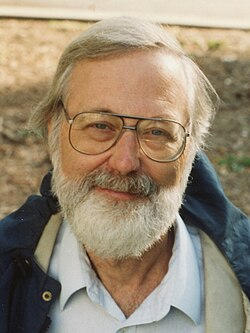

John Willard Milnor | |
|---|---|
 Milnor in Berkeley, 1993 | |
| Born | February 20, 1931 |
| Education | Princeton University (BA, MA, PhD) |
| Known for | Exotic spheres Fáry–Milnor theorem Hauptvermutung Milnor K-theory Microbundle Milnor Map, Milnor number and Milnor fibration in the theory of complex hypersurface singularities, part of singularity theory and algebraic geometry Milnor–Thurston kneading theory Plumbing Milnor–Wood inequality Surgery theory Kervaire-Milnor theorem Isospectral Non-Isometric compact Riemannian manifolds Švarc–Milnor lemma |
| Spouse | Dusa McDuff |
| Awards | Putnam Fellow (1949, 1950) Sloan Fellowship (1955) Fields Medal (1962) National Medal of Science (1967) Leroy P. Steele Prize (1982, 2004, 2011) Wolf Prize (1989) Abel Prize (2011) Lomonosov Gold Medal (2020) |
| Scientific career | |
| Fields | Mathematics |
| Institutions | Princeton University, Stony Brook University |
| Thesis | Isotopy of Links (1954) |
| Ralph Fox | |
Doctoral students | Tadatoshi Akiba Jon Folkman John Mather Laurent C. Siebenmann Michael Spivak |
John Willard Milnor (born February 20, 1931) is an American mathematician known for his work in differential topology, algebraic K-theory and low-dimensional holomorphic dynamical systems. Milnor is a distinguished professor at Stony Brook University and the only mathematician to have won the Fields Medal, the Wolf Prize, the Abel Prize and all three Steele prizes.
Milnor was born on February 20, 1931, in Orange, New Jersey.[1] His father was J. Willard Milnor, an engineer,[2] and his mother was Emily Cox Milnor.[3][4] As an undergraduate at Princeton University he was named a Putnam Fellow in 1949 and 1950[5] and also proved the Fáry–Milnor theorem when he was only 19 years old. Milnor graduated with an A.B. in mathematics in 1951 after completing a senior thesis, titled "Link groups", under the supervision of Ralph Fox.[6] He remained at Princeton to pursue graduate studies and received his Ph.D. in mathematics in 1954 after completing a doctoral dissertation, titled "Isotopy of links", also under the supervision of Fox.[7] His dissertation concerned link groups (a generalization of the classical knot group) and their associated link structure, classifying Brunnian links up to link-homotopy and introduced new invariants of it, called Milnor invariants. Upon completing his doctorate, he went on to work at Princeton. He was a professor at the Institute for Advanced Study from 1970 to 1990.
Milnor was an editor of the Annals of Mathematics for a number of years after 1962. He has written a number of books, like Characteristic Classes, which are famous for their clarity and presentation, providing inspiration for the research of many mathematicians in their areas, even many decades after their publication. He served as Vice President of the AMS in 1976–77 period.
Milnor's students have included Tadatoshi Akiba, Jon Folkman, John Mather, Laurent C. Siebenmann, Michael Spivak, and Jonathan Sondow. His wife, Dusa McDuff, is a professor of mathematics at Barnard College and is known for her work in symplectic topology.
One of Milnor's best-known works is his proof in 1956 of the existence of 7-dimensional spheres with nonstandard differentiable structure, which marked the beginning of a new field – differential topology. He coined the term exotic sphere, referring to any n-sphere with nonstandard differential structure. Kervaire and Milnor initiated the systematic study of exotic spheres by Kervaire–Milnor groups, showing in particular that the 7-sphere has 15 distinct differentiable structures (28 if one considers orientation).
Egbert Brieskorn found simple algebraic equations for 28 complex hypersurfaces in complex 5-space such that their intersection with a small sphere of dimension 9 around a singular point is diffeomorphic to these exotic spheres. Subsequently, Milnor worked on the topology of isolated singular points of complex hypersurfaces in general, developing the theory of the Milnor fibration whose fiber has the homotopy type of a bouquet of μ spheres where μ is known as the Milnor number. Milnor's 1968 book on his theory, Singular Points of Complex Hypersurfaces, inspired the growth of a huge and rich research area that continues to mature to this day.
In 1961, Milnor disproved the Hauptvermutung by illustrating two simplicial complexes that are homeomorphic but combinatorially distinct, using the concept of Reidemeister torsion.[8]
In 1984, Milnor introduced a definition of attractor.[9] The objects generalize standard attractors, include so-called unstable attractors, and are now known as Milnor attractors.
Milnor's current interest is dynamics, especially holomorphic dynamics. His work in dynamics is summarized by Peter Makienko in his review of Topological Methods in Modern Mathematics:
It is evident now that low-dimensional dynamics, to a large extent initiated by Milnor's work, is a fundamental part of general dynamical systems theory. Milnor cast his eye on dynamical systems theory in the mid-1970s. By that time the Smale program in dynamics had been completed. Milnor's approach was to start over from the very beginning, looking at the simplest nontrivial families of maps. The first choice, one-dimensional dynamics, became the subject of his joint paper with Thurston. Even the case of a unimodal map, that is, one with a single critical point, turns out to be extremely rich. This work may be compared with Poincaré's work on circle diffeomorphisms, which 100 years before had inaugurated the qualitative theory of dynamical systems. Milnor's work has opened several new directions in this field, and has given us many basic concepts, challenging problems and nice theorems.[10]
His other significant contributions include microbundles, influencing the usage of Hopf algebras, theory of quadratic forms and the related area of symmetric bilinear forms, higher algebraic K-theory, game theory, and three-dimensional Lie groups.
Milnor was elected as a member of the American Academy of Arts and Sciences in 1961.[11] In 1962 Milnor was awarded the Fields Medal for his work in differential topology. He was elected to the United States National Academy of Sciences in 1963 and the American Philosophical Society 1965.[12][13] He later went on to win the National Medal of Science (1967), the Lester R. Ford Award in 1970[14] and again in 1984,[15] the Leroy P. Steele Prize for "Seminal Contribution to Research" (1982), the Wolf Prize in Mathematics (1989), the Leroy P. Steele Prize for Mathematical Exposition (2004), and the Leroy P. Steele Prize for Lifetime Achievement (2011). In 1991 a symposium was held at Stony Brook University in celebration of his 60th birthday.[16]
Milnor was awarded the 2011 Abel Prize,[17] for his "pioneering discoveries in topology, geometry and algebra."[18] Reacting to the award, Milnor told the New Scientist "It feels very good," adding that "[o]ne is always surprised by a call at 6 o'clock in the morning."[19]
In 2013, he became a fellow of the American Mathematical Society, for "contributions to differential topology, geometric topology, algebraic topology, algebra, and dynamical systems".[20]
In 2020, he received the Lomonosov Gold Medal of the Russian Academy of Sciences.[21]
{kind=link}